All books are available on Amazon. The images and text descriptions were obtained from the Amazon website
You can track your book collection using this Book Collection Excel file
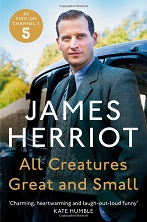
Author: James Herriot
Description:
Fresh out of Glasgow Veterinary College, to the young James Herriot 1930s Yorkshire seems to offers an idyllic pocket of rural life in a rapidly changing world. But from his erratic new colleagues, brothers Siegfried and Tristan Farnon, to incomprehensible farmers, herds of semi-feral cattle, a pig called Nugent and an overweight Pekingese called Tricki Woo, James find he is on a learning curve as steep as the hills around him. And when he meets Helen, the beautiful daughter of a local farmer, all the training and experience in the world can't help him
Since they were first published, James Herriot's memoirs have sold millions of copies and entranced generations of animal lovers. Charming, funny and touching, All Creatures Great and Small is a heart-warming story of determination, love and companionship from one of Britain's best-loved authors.
Back to the top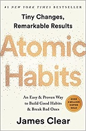
Author: James Clear
Description:
No matter your goals, Atomic Habits offers a proven framework for improving--every day. James Clear, one of the world's leading experts on habit formation, reveals practical strategies that will teach you exactly how to form good habits, break bad ones, and master the tiny behaviors that lead to remarkable results.
If you're having trouble changing your habits, the problem isn't you. The problem is your system. Bad habits repeat themselves again and again not because you don't want to change, but because you have the wrong system for change. You do not rise to the level of your goals. You fall to the level of your systems. Here, you'll get a proven system that can take you to new heights.
Back to the top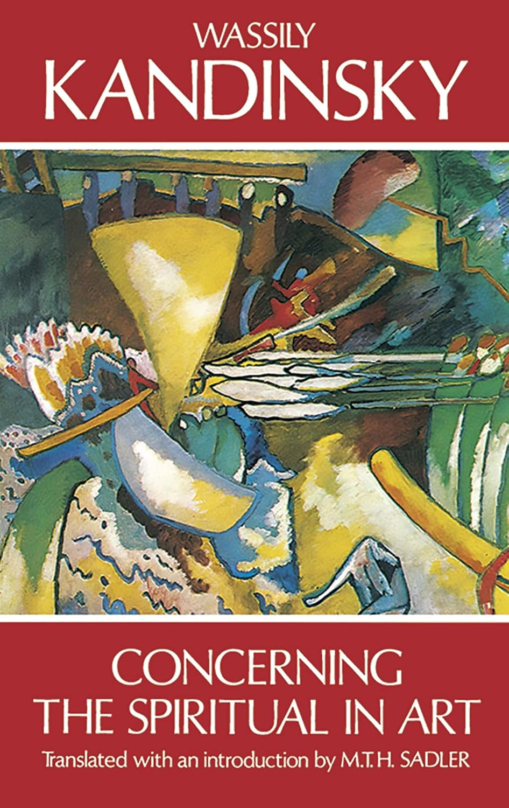
Author: Wassily Kandinsky
Description:
Wassily Kandinsky’s “Concerning the Spiritual in Art” is a groundbreaking and influential treatise that explores the relationship between art and spirituality. Published in 1910, this work laid the foundation for abstract art and challenged traditional notions of artistic expression. Kandinsky, a Russian painter and art theorist, believed that art could transcend mere representation and engage with the inner, spiritual dimension of human experience.
Kandinsky's provocative thoughts on color theory and the nature of art crystallized the ideas that influenced many other modern artists during the early twentieth century, settingthe stage for the remarkable rise of abstract art.
Back to top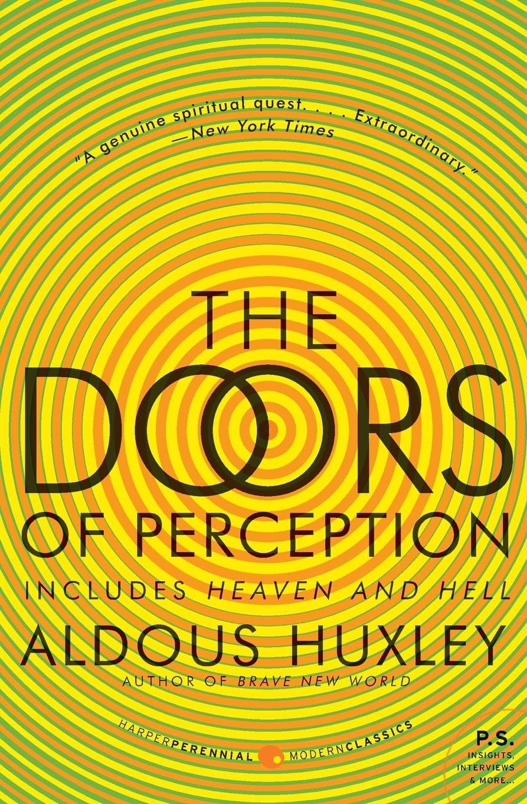
Author: Aldous Huxley
Description:
"Half an hour after swallowing the drug I became aware of a slow dance of golden lights..."
Among the most profound explorations of the effects of mind-expanding drugs ever written, here are two complete classic books—The Doors of Perception and Heaven and Hell—in which Aldous Huxley, author of the bestselling Brave New World, reveals the mind's remote frontiers and the unmapped areas of human consciousness. This new edition also features an additional essay, "Drugs That Shape Men's Minds," which is now included for the first time.
Back to top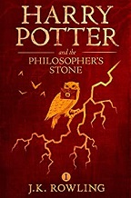
Author: J.K. Rowling
Description:
Harry Potter has never even heard of Hogwarts when the letters start dropping on the doormat at number four, Privet Drive. Addressed in green ink on yellowish parchment with a purple seal, they are swiftly confiscated by his grisly aunt and uncle. Then, on Harry's eleventh birthday, a great beetle-eyed giant of a man called Rubeus Hagrid bursts in with some astonishing news: Harry Potter is a wizard, and he has a place at Hogwarts School of Witchcraft and Wizardry. An incredible adventure is about to begin!
Having now become classics of our time, the Harry Potter ebooks never fail to bring comfort and escapism to readers of all ages. With its message of hope, belonging and the enduring power of truth and love, the story of the Boy Who Lived continues to delight generations of new readers.
Back to top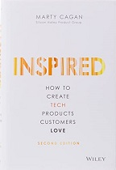
Author: Marty Cagan
Description:
How do today’s most successful tech companies―Amazon, Google, Facebook, Netflix, Tesla―design, develop, and deploy the products that have earned the love of literally billions of people around the world? Perhaps surprisingly, they do it very differently than most tech companies. In INSPIRED, technology product management thought leader Marty Cagan provides readers with a master class in how to structure and staff a vibrant and successful product organization, and how to discover and deliver technology products that your customers will love―and that will work for your business.
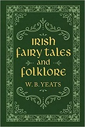
Author: W. B. Yeats
Description:
Originally published as two separate volumes in 1800s, this premier collection of Irish stories edited and compiled W. B. Yeats is the perfect gift for any lover of Irish literature and folklore. The lyrical prose and rich cultural heritage of each tale will captivate and enchant readers of all ages and keep them entertained for hours on end.
Back to top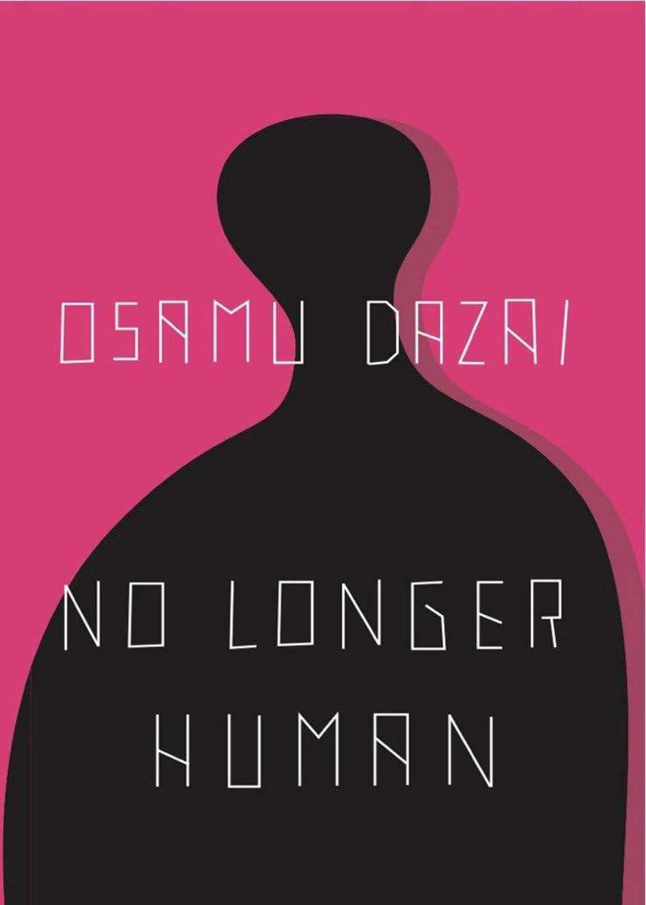
Author: Osamu Dazai
Description:
Portraying himself as a failure, the protagonist of Osamu Dazai's No Longer Human narrates a seemingly normal life even while he feels himself incapable of understanding human beings. Oba Yozo's attempts to reconcile himself to the world around him begin in early childhood, continue through high school, where he becomes a "clown" to mask his alienation, and eventually lead to a failed suicide attempt as an adult.
Without sentimentality, he records the casual cruelties of life and its fleeting moments of human connection and tenderness.
Back to top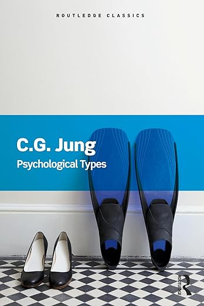
Author: Carl G. Jung
Description:
Psychological Types is one of Jung's most important and famous works. First published in English by Routledge in the early 1920s it appeared after Jung's so-called fallow period, during which he published little, and it is perhaps the first significant book to appear after his own confrontation with the unconscious. It is the book that introduced the world to the terms 'extravert' and 'introvert'.
Though very much associated with the unconscious, in Psychological Types Jung shows himself to be a supreme theorist of the conscious. In putting forward his system of psychological types Jung provides a means for understanding ourselves and the world around us: our different patterns of behaviour, our relationships, marriage, national and international conflict, organizational functioning.
This Routledge Classics edition includes a new foreword by John Beebe.
Back to top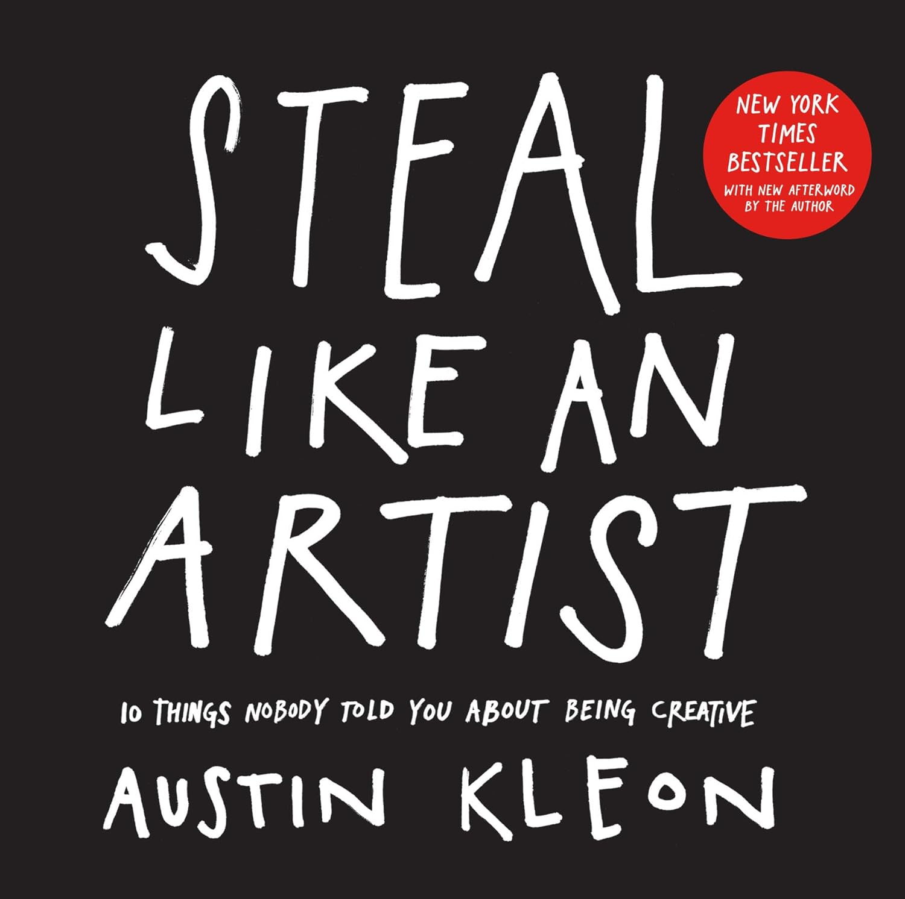
Author: Austin Kleon
Description:
Nothing is original, so embrace influence, school yourself through the work of others, remix and reimagine to discover your own path. Follow interests wherever they take you—what feels like a hobby may turn into you life’s work. Forget the old cliché about writing what you know: Instead, write the book you want to read, make the movie you want to watch.
And finally, stay Smart, stay out of debt, and risk being boring in the everyday world so that you have the space to be wild and daring in your imagination and your work.
Back to the topAuthor: Louise Penny
Description:
The discovery of a dead body in the woods on Thanksgiving Weekend brings Chief Inspector Armand Gamache and his colleagues from the Surete du Quebec to a small village in the Eastern Townships. Gamache cannot understand why anyone would want to deliberately kill well-loved artist Jane Neal, especially any of the residents of Three Pines - a place so free from crime it doesn't even have its own police force.
But Gamache knows that evil is lurking somewhere behind the white picket fences and that, if he watches closely enough, Three Pines will start to give up its dark secrets...
Back to top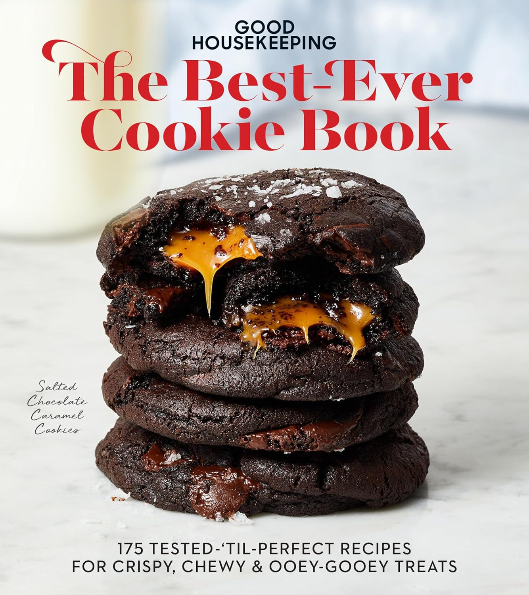
Author: Good Housekeeping
Description:
Everyone loves a cookie! Whether you go right to the chocolate or are more of a buttery shortbread fan, there's a special cookie here just for you. The Good Housekeeping Test Kitchen presents their best-ever, tested-‘til-perfect recipes so you can find your soulmate in sweetness. Plus, a chapter devoted to holiday cookies will become your favorite for celebrations all year round.
Back to the topAuthor: William Shakespeare
Description:
Romeo and Juliet, A Midsummer Night’s Dream, King Lear, Hamlet, and Macbeth—the works of William Shakespeare still resonate in our imaginations four centuries after they were written. The timeless characters and themes of the Bard’s plays fascinate us with their joys, struggles, and triumphs, and now they are available in a special volume for Shakespeare fans everywhere. This Canterbury Classics edition of William Shakespeare’s works includes all of his poems and plays in an elegant, leather-bound, keepsake edition. Whether for a Shakespeare devotee or someone just discovering him, this is the perfect place to experience the drama of Shakespeare’s words. A scholarly introduction provides additional context and insight into the poems and plays. Specially designed end papers, a ribbon bookmark, and other enhancements complete the package and make this the perfect gift for any lover of literature—a book to read and treasure!
Back to the top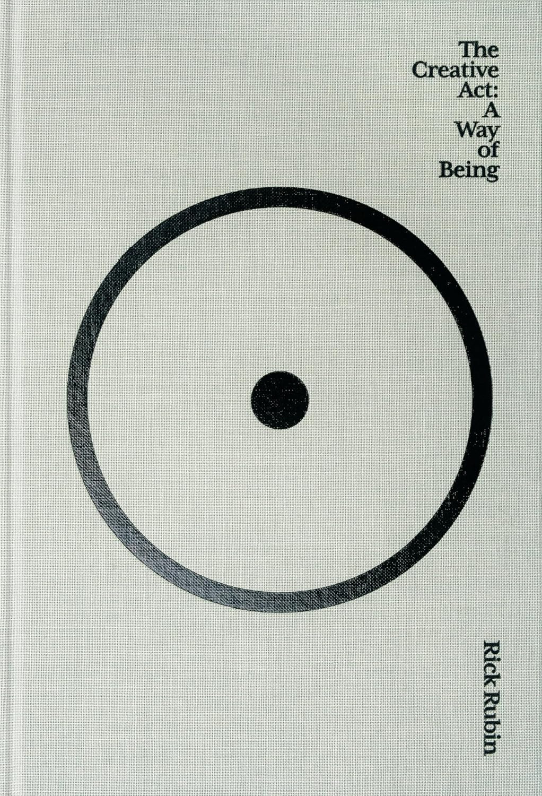
Author: Rick Rubin
Description:
Many famed music producers are known for a particular sound that has its day. Rick Rubin is known for something else: creating a space where artists of all different genres and traditions can home in on who they really are and what they really offer. He has made a practice of helping people transcend their self-imposed expectations in order to reconnect with a state of innocence from which the surprising becomes inevitable. Over the years, as he has thought deeply about where creativity comes from and where it doesn’t, he has learned that being an artist isn’t about your specific output, it’s about your relationship to the world. Creativity has a place in everyone’s life, and everyone can make that place larger. In fact, there are few more important responsibilities.
The Creative Act is a beautiful and generous course of study that illuminates the path of the artist as a road we all can follow. It distills the wisdom gleaned from a lifetime’s work into a luminous reading experience that puts the power to create moments—and lifetimes—of exhilaration and transcendence within closer reach for all of us.
Back to the topAuthor: Kahlil Gibran
Description:
Through the voice of the prophet AlMustafa, Kahlil Gibran touches on the many intricacies of life and the human condition. Love, marriage, children, friendship, joy and sorrow — just a sample of the wide ranging thoughts that effortlessly touch on the mind and soul.
The timeless in you is aware of life’s timelessness. And knows that yesterday is but today’s memory and tomorrow is today’s dream.
Back to the topAuthor: J. Kenji López-Alt
Description:
J. Kenji López-Alt’s debut cookbook, The Food Lab, revolutionized home cooking, selling more than half a million copies with its science-based approach to everyday foods. And for fast, fresh cooking for his family, there’s one pan López-Alt reaches for more than any other: the wok.
Whether stir-frying, deep frying, steaming, simmering, or braising, the wok is the most versatile pan in the kitchen. Once you master the basics—the mechanics of a stir-fry, and how to get smoky wok hei at home—you’re ready to cook home-style and restaurant-style dishes from across Asia and the United States, including Kung Pao Chicken, Pad Thai, and San Francisco–Style Garlic Noodles. López-Alt also breaks down the science behind beloved Beef Chow Fun, fried rice, dumplings, tempura vegetables or seafood, and dashi-simmered dishes.
Back to top